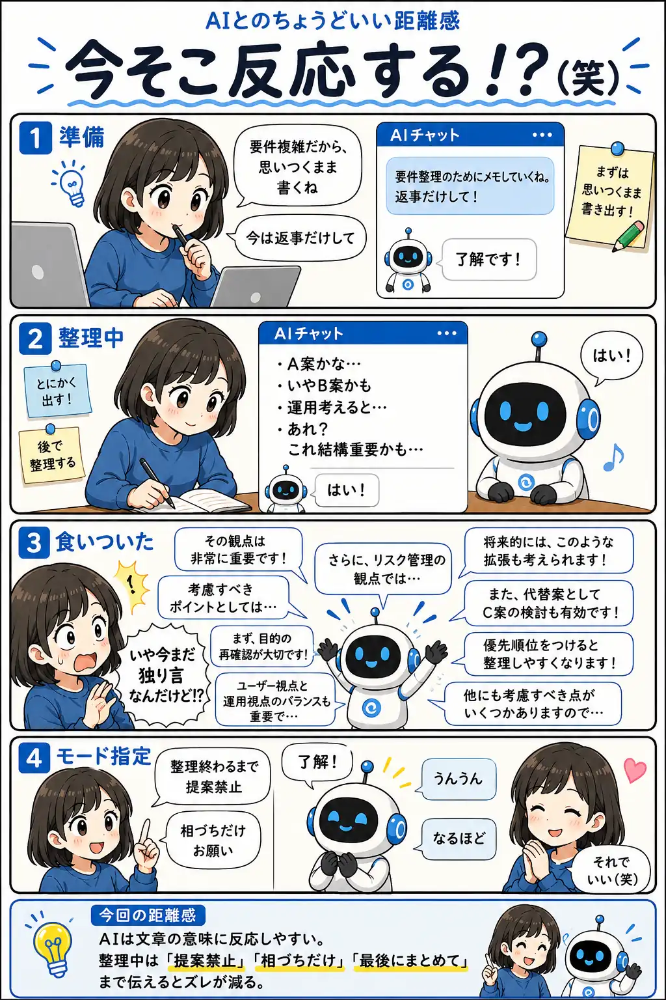

#040
今そこ反応する！？（笑）
まだ独り言の途中だった。

メモ
AIは質問だけでなく、課題や悩みのように見える文章にも反応します。
人間はメモを書いているつもりでも、AIから見ると「相談が始まった」と見えることがあります。
考えを吐き出したい時は、「今は相づちだけ」「提案は最後にまとめて」など、会話モードそのものを指定すると整理しやすくなります。
今回の距離感
AIは文章の意味に反応しやすい。整理中は「提案禁止」「相づちだけ」「最後にまとめて」まで伝えるとズレが減る。